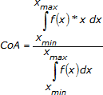
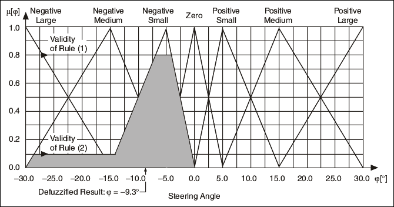
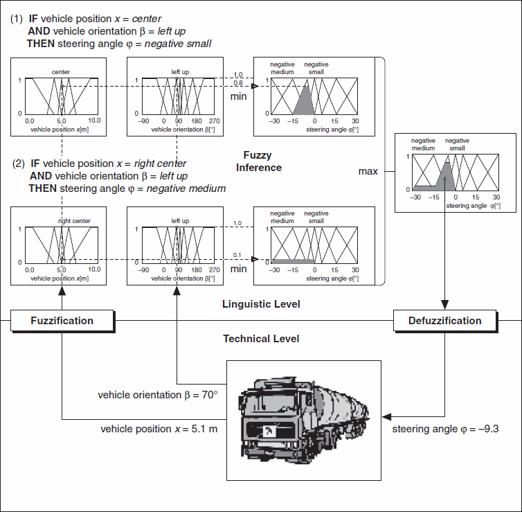

In the Center of Area (CoA) defuzzification method, also called the Center of Gravity (CoG) method, the fuzzy controller first calculates the area under the scaled membership functions and within the range of the output variable. The fuzzy logic controller then uses the following equation to calculate the geometric center of this area.

where CoA is the center of area, x is the value of the linguistic variable, and xmin and xmax represent the range of the linguistic variable. The Center of Area defuzzification method effectively calculates the best compromise between multiple output linguistic terms.
The following image shows the Center of Area defuzzification method for the Steering Angle φ output linguistic variable of a vehicle maneuvering fuzzy system, assuming the Minimum implication method. The shaded portion of the graph represents the area under the scaled membership functions.

The following image summarizes the process of a fuzzy controller for the vehicle maneuvering example using the Center of Area defuzzification method.
